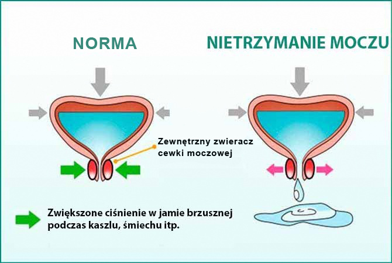

Według statystyk 72% kobiet po 50 roku życia mają nietrzymanie moczu i wycieki (37% u kobiet po 30 roku życia).
Najbardziej niebezpieczną rzeczą w tej patologii jest to, że z czasem nie będzie lepiej - będzie tylko więcej
„przecieków”. Oznacza to, że mokre plamy na ubraniach i zapach tylko się nasilą.
Jednak przy
stosowaniu
nowoczesnych produktów jest łatwo pozbyc się tego problemu. Główny specjalista w dziedzinie urologii, naukowca,
członek
prywatnej Akademii Nauk, kierownik wydziału Urologii na prywatnym Uniwersytcie Medycznym Karol
Kolowski.
Pan Karol Kolowski - jedyny specjalista, który jest regularnie zapraszany do wystąpień w wiodących
instytutach
naukowych i klinikach w Europie i Stanach Zjednoczonych.
- Panie Karolu, jak niebezpieczne jest nietrzymanie moczu dla pięknej połowy
ludzkości?
W
rzeczywistości wiele kobiet nawet nie zdaje sobie sprawy, że jest to poważna choroba. A jej konsekwencje są
niedoceniane. Wielu ma nadzieję, że z czasem zniknie samo z siebie. Ale to nigdy nie zniknie samo z siebie,
należy to
rozumieć. Nietrzymanie moczu może zniszczyć nie tylko życie człowieka, z jego powodu i ciągłego zapachu u
kobiety
powstają kompleksy i napięte relacje z innymi łudzi. Nawiasem mówiąc, nie jest to nieuzasadnione - ludzie,
którzy pachną moczem, są zwykle unikani. Ten zapach jest nieprzyjemny dla ludzi.
Ale nadal
głównym
niebezpieczeństwem tej patologii jest to, że w wilgotnym i ciepłym środowisku patogenna mikroflora szybko wnika
do
pochwy i osiada na błonie śluzowej.
Według statystyk, po 1-2 miesiącach regularnych „przecieków”
u
kobiety rozwija się dysbakterioza pochwy, po 3-4 miesiącach przewlekłe zapalenie okrężnicy lub zapalenie pochwy.
Około
rok później u kobiet z nietrzymaniem moczu (które nie otrzymały odpowiedniej terapii) może być
zdiagnozowano
łagodne formacje. A torbiele pojawiają się w bardzo dużej liczbie. Przyczynia się do tego niezdrowa mikroflora.
W
dowolnym momencie takie formacje mogą stać się złośliwe.
Jeśli spontaniczne oddawanie moczu nie
zostanie
poddane terapii, pęcherz przestanie w ogóle zatrzymywać mocz i osoba będzie musiała udać się do
cewnikowania.
Procedura ta polega na wprowadzeniu do pęcherza cewnika, który jest przymocowany do odbiornika moczu
zawieszanego
na nodze. A to jest niepełnosprawność.
W rzeczywistości kobieta, która zmaga się z wyciekającym
moczem
zwykłymi codziennymi podpaskami (lub wcale nie walczy), żyje z bombą zegarową. I szczerze mówiąc, nie
rozumiem,
dlaczego kobiety to robią. Teraz istnieją dość skuteczne sposoby usuwania nietrzymania moczu. W ciągu 2-3
tygodni można
na zawsze zapomnieć o tym problemie.
- Mówisz teraz o metodach
chirurgicznych?
- Oczywiście, że nie. Co więcej, chcę odwieść wszystkich od takich
operacji. W tym przy użyciu lasera i taśmy
sling. Pomimo dużej szybkości manipulacji (które lubią przyciągać kliniki i nieuczciwi specjaliści,
którzy
pragną pieniędzy), operacje te mają wiele negatywnych konsekwencji dla zdrowia kobiety, ponieważ prowadzą do
stagnacji
moczu w organizmie, a to jest obarczone rozwojem tych samych torbieli. Ale najważniejszą wadą interwencji
chirurgicznej
jest to, że jest to w rzeczywistości tylko kosmetyczna eliminacja problemu, t.j. konsekwencji choroby, a nie jej
przyczyny.
Ponieważ przyczyna pozostaje, problem pojawia się ponownie w przyszłości. I bardzo szybko
– w
ciągu 1-2 lat.
Jeśli chcesz pozbyć się nietrzymania moczu raz na zawsze, musisz wyeliminować
przyczynę. A
przyczyną jest słaba trzustka. Z powodu zaburzeń endokrynologicznych organizm jest przesycony glukozą i
szkodliwymi
produktami glikolizy (proces utleniania glukozy wykonywany przez trzustkę). Substancje te, które znajdują
się w
dużych ilościach w moczu, "wypłukują" wapń i magnez, które zapewniają elastyczność mięśni. W
rezultacie
mięśnie osłabiają się i przestają utrzymywać mocz.

Utrata elastyczności mięśni w wyniku wypłukiwania użytecznych substancji jest główną przyczyną wycieku
moczu.
Najpierw pojawiają się wycieki podczas kaszlu lub kichania, a następnie będą występować w sposób
ciągły.
Podczas operacji wykonuje się napięcie mięśni, ale wapń i magnez są nadal wypłukiwane. To prowadzi do
ponownego
wystąpienia problemu. Dlatego w naszej klinice przestaliśmy zalecać chirurgiczne metody pozbycia się
nietrzymania
moczu.
- Co Pan poleciłby na nietrzymanie moczu teraz?
- Jest bardzo
dobry
Europejski środek o nazwie
. Jest specjalnie wynaleziony do zwalczania
tej
dolegliwości i wykazuje po prostu fenomenalną skuteczność – pomaga prawie wszystkim!
Posiada 3 ważne
działania. Po pierwsze - normalizuje pracę trzustki. O drugie – oczyszcza płyny ustrojowe z glukozy i
produktów glikolizy. Po trzecie – przywraca ściany i mięśnie pęcherza. Oznacza to, że ma cały zestaw
niezbędnych
działań.
W tym samym czasie same wycieki znikają bardzo szybko – już kilka dni po rozpoczęciu
stosowania
, bielizna będzie sucha. Aby całkowicie pozbyć się dolegliwości,
normalizować
funkcję trzustki i wzmocnić mięśnie dna miednicy i pęcherza, z reguły wystarczy jednej kuracji produktu. W
rzadkich
przypadkach może to potrwać trochę dłużej.
Środek jest nowy i bardzo skuteczny - opracowany w
Szwajcarii. W
jego powstaniu uczestniczyli najlepsi światowi naukowcy.
- Czy ten środek jest sprzedawany na receptę? Aby zacząć go stosować, należy najpierw udać się do
urologa?
- Cała atrakcyjność
polega właśnie na tym,
że można go stosować w domu. Wszyscy
wiedzą, że kobiety (podobnie jak mężczyźni) nie spieszą się do specjalistów z tak delikatnym problemem. Wstydzą
się. Nie
muszą tego robić z
!
jest sprzedawany bez recepty. Jest to całkowicie naturalny środek, składający się wyłącznie z ekstraktów
roślin
leczniczych. Składa się z ekstraktu z owoców Saw Palmeto, Pokrzywy, Ekstrakt z żurawiny, Cynk i wielu innych.
Jakakolwiek chemia jest wykluczona, można go przyjmować bez zagrożenia dla zdrowia. Oznacza to, że
idealnie
nadaje się do stosowania w domu.
Oprócz podstawowych działań
ma wiele dodatkowych:
- Łagodzi stany zapalne.
- Zapobiega infekcjom dróg moczowych.
- Przyspiesza i ułatwia wydalanie moczu.
- Pomaga w zwalczaniu pleśniawki i zapalenia pęcherza moczowego.
- Zwiększa odporność organizmu.
- Poprawia krążenie w narządach miednicy.
- Dostarcza organizmowi dużą ilość witamin i pierwiastków śladowych.
- Panie Karolu, ile kosztuje ten środek i w jakich aptekach można go kupić?
-
Niestety, nie
jest sprzedawany w aptekach. O ile mi wiadomo, producent i sieci aptek nie były w stanie uzgodnić warunków
sprzedaży.
Ponieważ środek jest skuteczny, a na początku jego sprzedaży gorzej będą sprzedawane inne środki do normalizacji
oddawania
moczu, apteki zaproponowały ustalenie bardzo wysokiej ceny. Ale producent nie poszedł na to. Jednak środek można
zamówić za pośrednictwem naszego instytutu badawczego.
jest
dość
drogim środkiem - jego zwykły koszt jest bardzo przyzwoity, ale
stał się
głównym
narzędziem w programie usuwania problemów układu moczowo-płciowego. W ramach tego programu organizowane jest
bezpośrednie dostarczanie produktu do dowolnego miejsca w kraju. To pozwoliło polskim kobietom otrzymać
po
obniżonej cenie.
Więcej informacji o tym, jak zamówić
.
Aby uzyskać
,
należy:
1.
Wypełnij wniosek na stronie.
2. Następnie odbierz telefon operatora, aby potwierdzić adres dostawy.
3.
Po 4-7
dniach można będzie odebrać
.
Przy okazji jeszcze raz powiem o
skuteczności
produktu. Teraz na stronie przeprowadzamy ankietę wśród tych klientów, którzy wypróbowali
. W badaniu wzięło udział ponad 3200 kobiet. Jedyne pytanie brzmi – „Czy
pomógł Ci pozbyć
się
nietrzymania moczu?”
Wyniki ankiety:
Jak widać,
pomaga prawie wszystkim!
-
Panie Karolu, bardzo dziękuję za rozmowę. Może chce Pan powiedzieć coś naszym czytelnikom?
-
Życzę zdrowia! Nie doprowadzajcie swojego organizmu do niepełnosprawności! Każda patologia jest znacznie
łatwiejsza do
usuwania w początkowych stadiach. W tym nietrzymanie moczu! Bądźcie zdrowi!